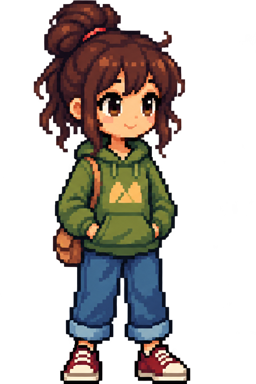

" A tiny life is happening on your desktop "
Desk-partment // Empty
Resident // Kaya
Status // Autonomous

" Don't touch anything. Kaya doesn't need you. "
She chooses when to move, where to go, and how long to remain idle.
Prototype scope // Autonomous resident behaviour
Currently implemented :
- Idle & Walking states
- Autonomous movement
- Randomized destinations
- Random Idle duration
- Direction-aware animation
- Mirrored Sprites
Built with HTML + CSS + JavaScript
with AI-assisted coding, debugging and sprite generation using ChatGPT